Core · Video walkthrough
Create assigned and signup shift schedules
Create small fictional schedules and verify their actual stored values and coverage counts.
Before you begin
- Use a fictional practice department and existing shift create/view/update permissions.
- Use existing groups, roles and members; prepare future dates and identifiable practice entries.
Chapters
- Choose the schedule you need
- Name an Assigned shift
- Select a date and both times
- Configure the group and role minimum
- Choose an assigned member
- Submit once and inspect the new row
- Verify the stored fields and dated roster
- Prepare a separate approval-enabled Signup shift
- Read the saved Signup day without assuming coverage
- Review the separate group policy and approval queue
- Separate a future roster from current duty
- Apply the same review habit
Watch the walkthrough
Step 1
Choose the schedule you need
Shifts brings two kinds of scheduling into one place. Recurring Group Shifts organizes people and required roles across dated shift days. Add Static Shift creates a separate fixed window for resources. Start by identifying the work you need to coordinate. In our fictional Chicago Fire department, we will create an assigned personnel schedule, then a separate signup schedule. Your Shifts, On Duty Now, Approvals and Shift Staffing are separate views. A scheduled roster gives you recorded coverage; check current operational information separately.

Practice
Identify Add Recurring Group Shift and Add Static Shift, then decide which matches your practice task.
Step 2
Name an Assigned shift
Choose Add Recurring Group Shift to open New Shift. Enter a distinctive practice name and the short code T R N twenty-eight A. Assignment Type is Assigned, so the administrator chooses the people for this schedule. Use a light background color because the calendar text is black. The supervisor approval checkbox is clear in this example. That control governs signups and trades; it is not the list of assigned personnel. Review these choices before using Next to open Schedule.
Practice
Prepare a uniquely named Assigned shift and read its code, color and approval setting before continuing.
Step 3
Select a date and both times
Schedule gives you a multi-month date picker and separate Start Time and End Time fields. Our example selects November fourth, twenty twenty-six, from nine to eleven in the morning. Check both displayed times after leaving the fields and confirm the intended date is highlighted. This is a manually selected schedule, even though it appears under Recurring Group Shifts. The wizard shown here does not offer a rotation preset. Once the date and times are correct, continue to the Slots stage.
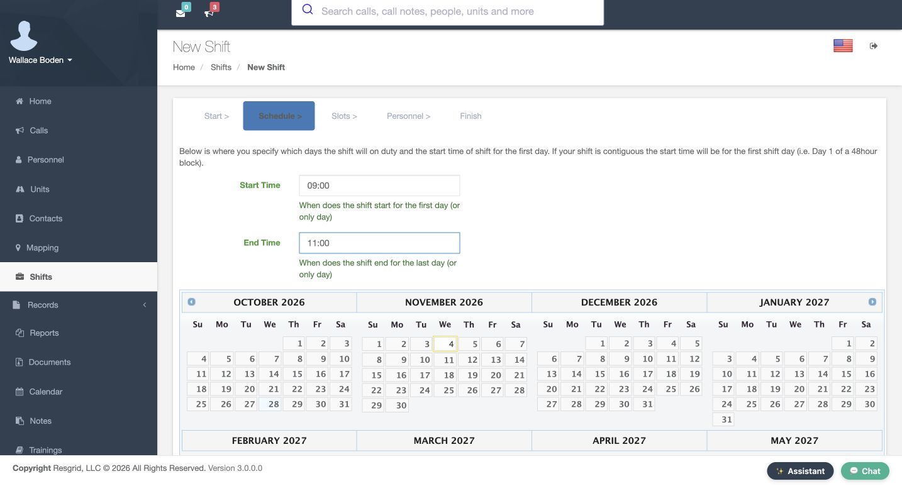
Practice
Select one future practice date and verify both time fields after leaving them.
Step 4
Configure the group and role minimum
In Slots, Add Group to Shift adds a group row. Firehouse fifty-one is selected here. Add Role to Group creates a required-role row for that group. Choose Officer and leave Roles Count at one. These values define what coverage the schedule should compare against its roster. Adding a role minimum does not assign a person. Review the group, role and count together, then continue to Personnel. Use the department’s published role conventions when configuring your own coverage requirements.
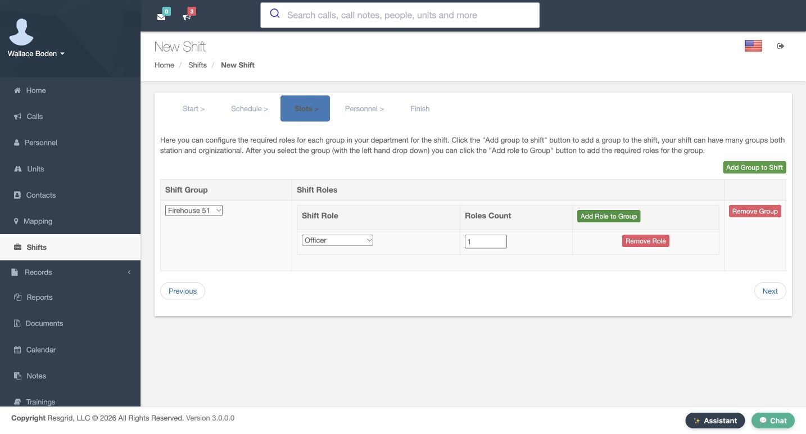
Practice
Add one practice group with one existing role and a required count of one.
Step 5
Choose an assigned member
Personnel separates Non-Group Personnel from the individual group pickers. Non-group entries are described as floaters or standbys. In the Firehouse fifty-one picker, choose Matthew Casey. His selected name is visible as a chip. Leave the other group pickers empty for this small exercise. The text explains that assigned people fill role slots according to their group and roles. Verify the selected member under the intended group; selecting a name elsewhere is a different assignment. Use Next when that review is complete.
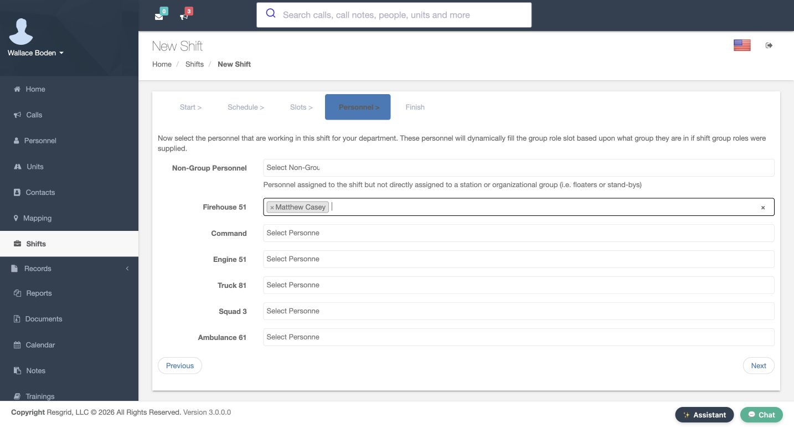
Practice
Select one eligible existing practice member under the intended group and verify the visible chip.
Step 6
Submit once and inspect the new row
The Finish stage contains an instruction and a separate Finish control at the lower right. That lower control creates the schedule. Submit once and read the returned row in Recurring Group Shifts. Our new row says Assigned and Manual, with one group and one person. It offers View Calendar, Edit Details, Edit Calendar and Edit Groups. Those actions inspect different parts of the saved schedule. Confirm the new row before opening an editor or assuming that a prepared wizard has already been stored.
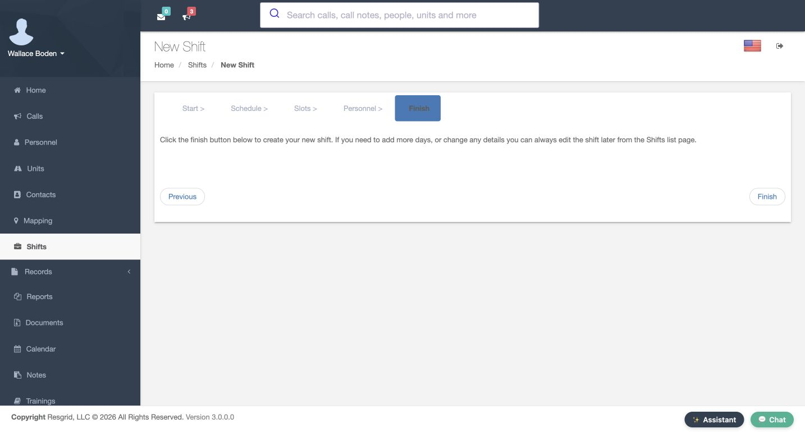
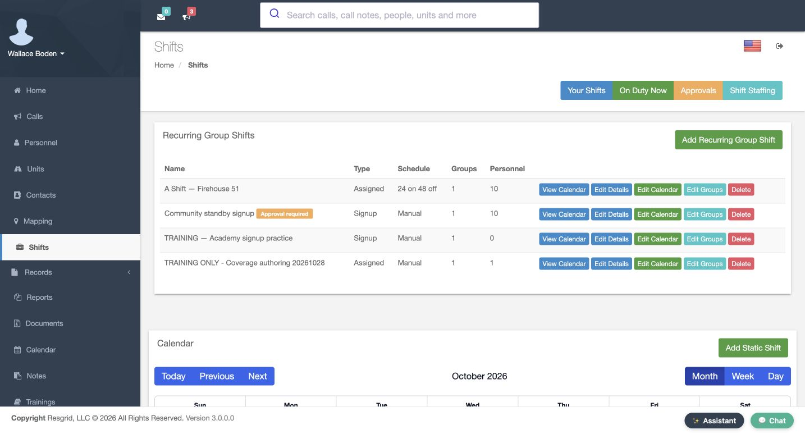
Practice
Create your own practice schedule once and verify its returned type, schedule mode and counts.
Step 7
Verify the stored fields and dated roster
Reopen Edit Details to check the stored name, code, light blue color and nine-to-eleven time window. Casey remains selected under Firehouse fifty-one. In the shared calendar, open the November fourth entry. Its day detail is Upcoming and shows the same times. The Officer row says Required one and Needed zero; the roster lists Casey as Assigned. Fully staffed means this configured one-role requirement is filled. It does not establish arrival, qualifications or an apparatus crew assignment. Read the actual role counts behind the summary.
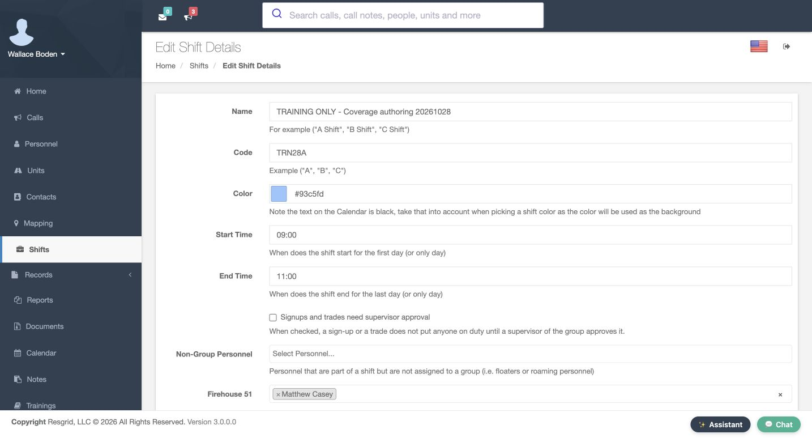
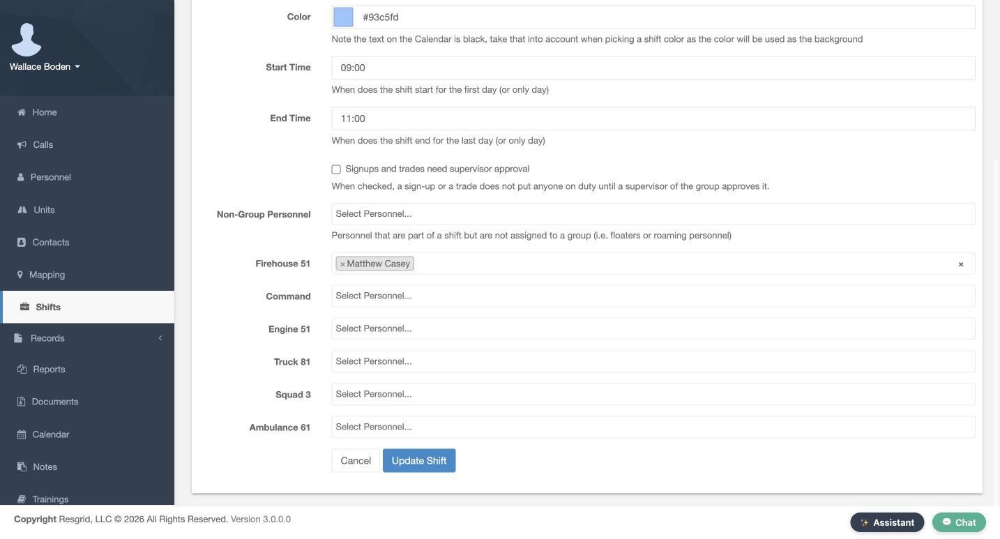
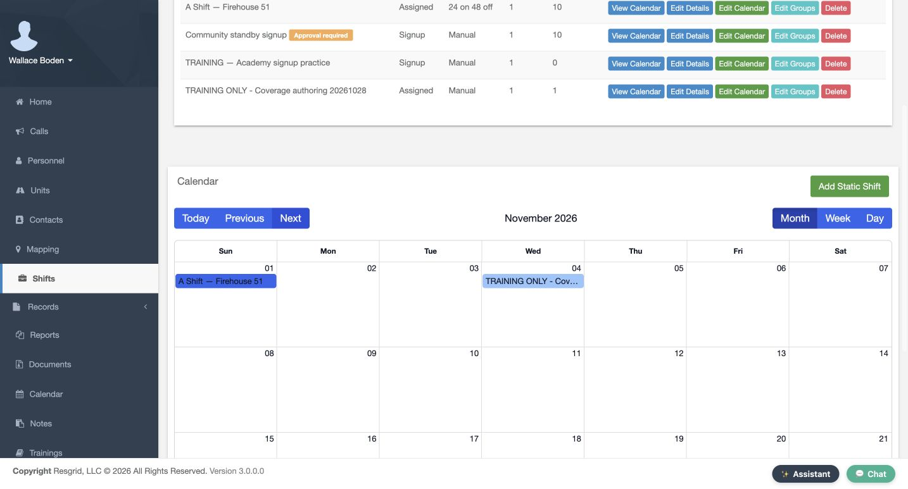
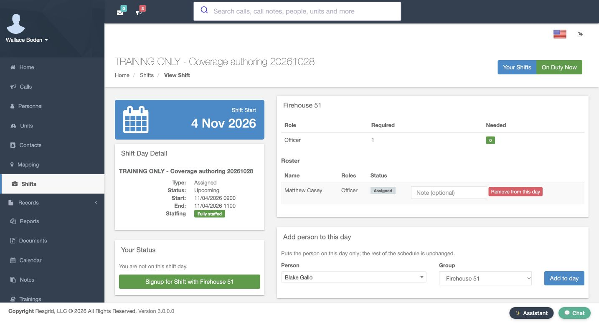
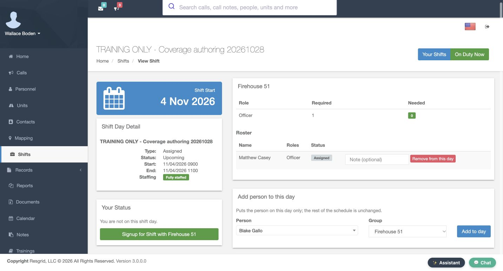
Practice
Leave and reopen the saved details, then inspect the dated role requirement and named roster.
Step 8
Prepare a separate approval-enabled Signup shift
For a signup schedule, create a separate practice entry with code T R N twenty-eight S and Assignment Type Signup. Check Signups and trades need supervisor approval. The help says that a signup or trade does not put anyone on duty until a group supervisor approves it. Select November fifth and sixth, using the same morning time window and one required Officer for Firehouse fifty-one. Leave every Personnel picker empty. Members can request their own dates separately. Review Finish and submit this new schedule once.
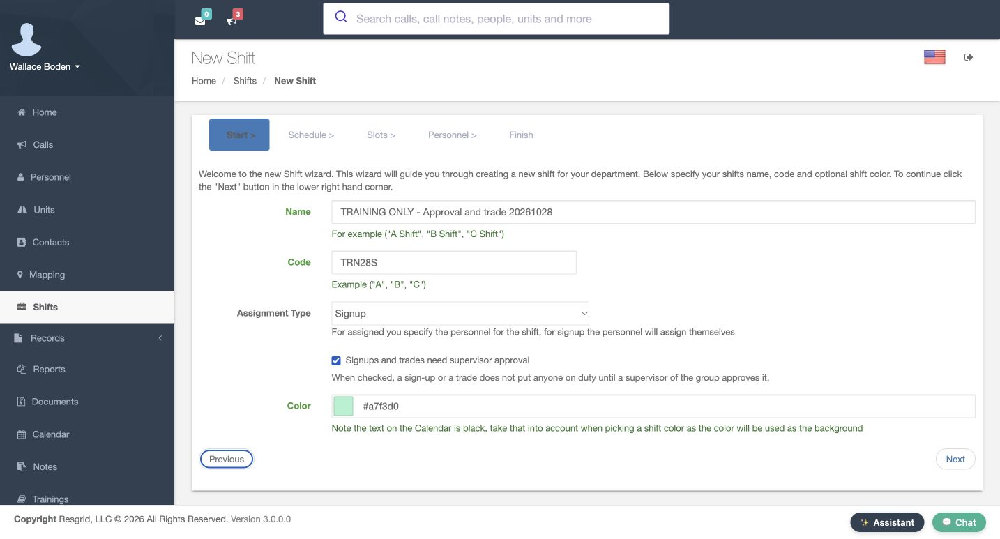
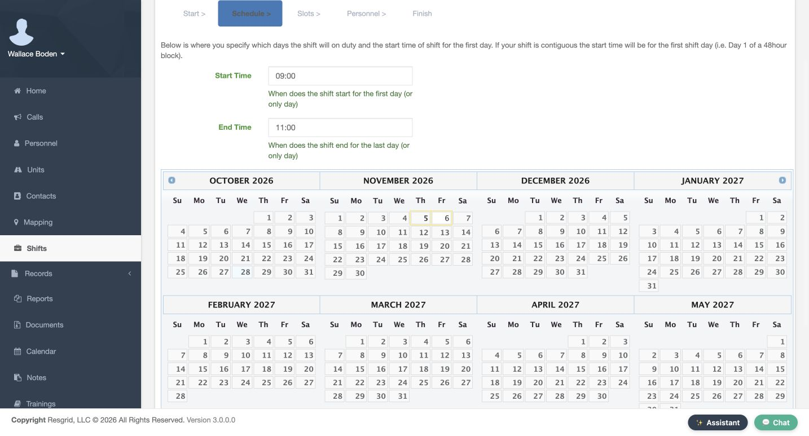
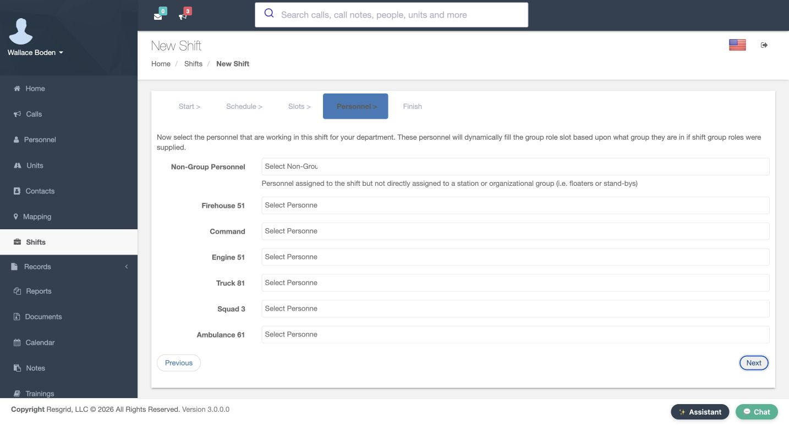
Practice
Prepare a separate future Signup schedule with approval enabled and no preassigned people.
Step 9
Read the saved Signup day without assuming coverage
The saved row now carries Approval required. Reopen its details and calendar to verify the setting, times and two selected dates. On November fifth, the day detail is Signup and Upcoming. It shows Open slots one, an Officer requirement of one, and Nobody is on this day yet. Your Status says that the current user is not on this day, and a group signup button is available. An empty roster remains unfilled even though the schedule has been created. A member request and its supervisor review are separate operations.
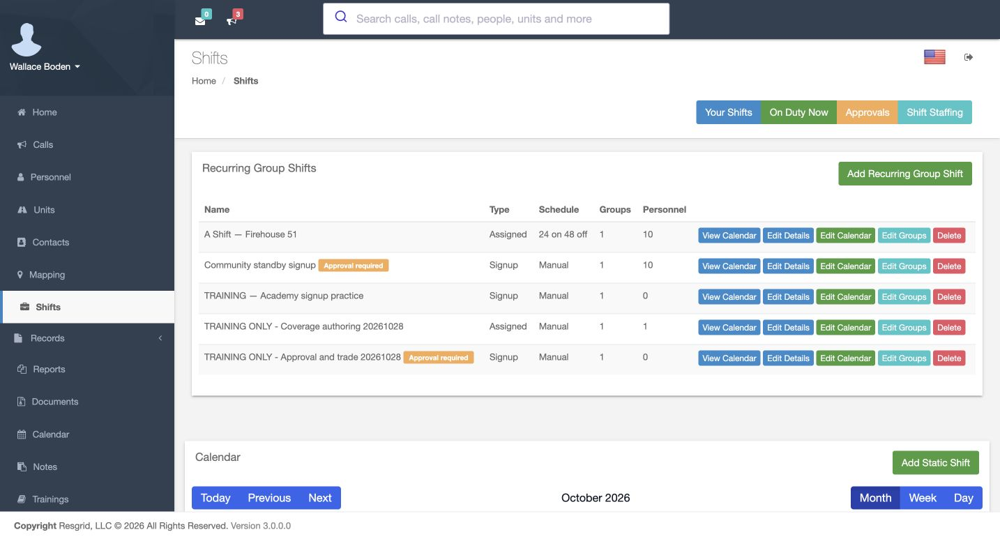
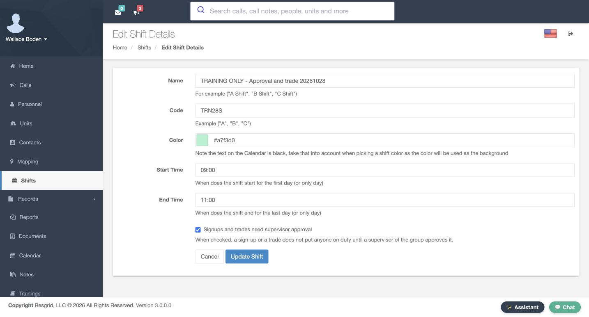
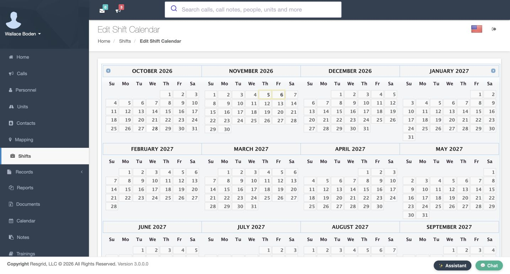
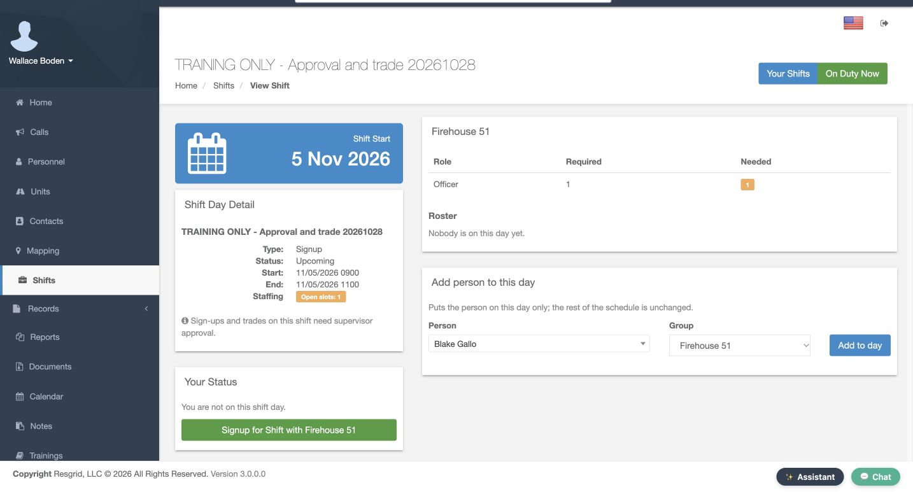
Practice
Open the saved Signup day and compare Required, Needed and the actual roster before reporting coverage.
Step 10
Review the separate group policy and approval queue
Department Shift Settings has a separate Allow Signups For Multiple Groups option. It is off here and remains unchanged. The help asks you to review overlaps and local coverage rules separately. This department policy is different from the approval checkbox on an individual shift. Open Approvals to review waiting signups and trades in groups you supervise. Both queues are empty in this example. The page states that a pending request does not put anyone on duty until it is approved. An empty queue is not a completed approval.
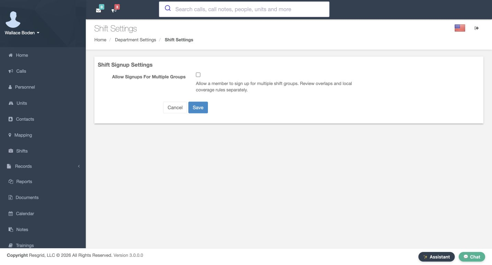
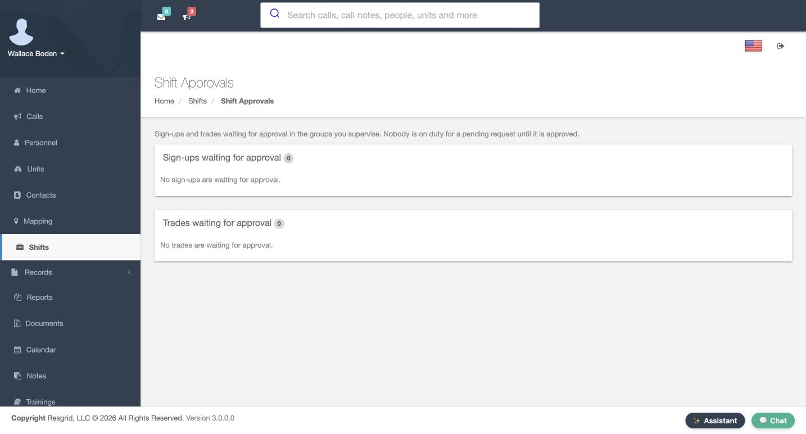
Practice
Read the existing multiple-group policy, then distinguish an empty approval queue from an approved request.
Step 11
Separate a future roster from current duty
On Duty Now shows a timestamp and the currently active shift, grouped by assignment. Here the existing A Shift is active, with its recorded members and roles. Our new November dates are future schedules. Keep those two questions separate: who is scheduled on a selected day, and which schedule is active now. The page says it refreshes every minute and also offers Refresh. These are recorded roster views; use the appropriate operational workflow to verify current availability and other information your team needs.
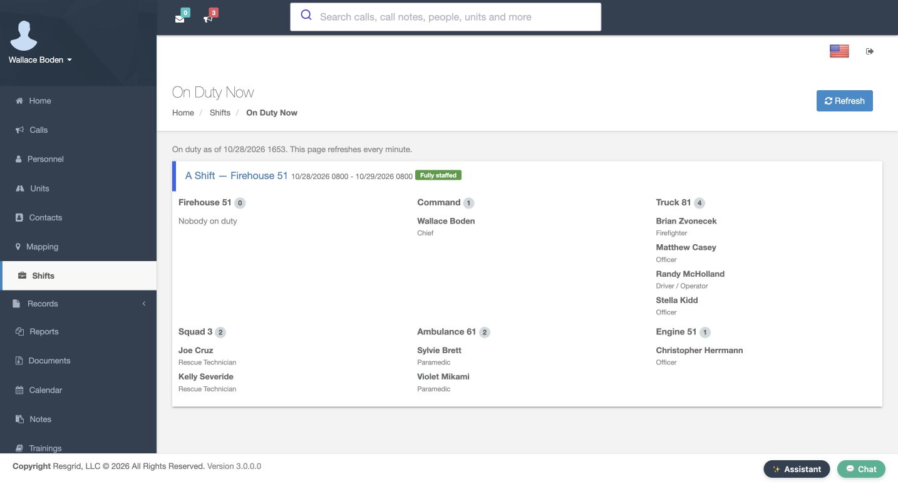
Practice
Read the current-duty timestamp and compare its active shift with your future practice date.
Step 12
Apply the same review habit
Chicago Fire can use this pattern to coordinate station coverage. Community care and mental health teams can schedule operational team coverage without patient detail. Search and rescue can organize standby roles; security teams can coordinate site coverage; wildland crews can plan relief rosters; and industrial response teams can schedule drill support. In every setting, choose the right assignment type, state the group and role requirements clearly, and verify the saved dated roster. Handle member requests, approvals, attendance and trades through their own reviewed steps.
Practice
Choose one sector scenario and write the group, role, date and saved-result checks your team would use.
Examples for your department
- Fire / EMS
- A fictional station coverage schedule and a separate software equipment window.
- Community response
- Operational team coverage and a service-vehicle support window; no patient detail or clinical conclusions.
- Search and rescue
- A fictional standby roster and support-equipment schedule; no staging arrival claim.
- Security
- A fictional site-coverage roster and separate equipment window.
- Wildland
- A fictional relief schedule and support-resource window; no rest-rule or qualification certification.
- Industrial
- A fictional drill-support roster and facility-response equipment schedule; no readiness/work/payment certification.
Transcript
Download transcriptRead the complete transcript
Create assigned and signup shift schedules Audience: department administrators, shift supervisors Choose the schedule you need Shifts brings two kinds of scheduling into one place. Recurring Group Shifts organizes people and required roles across dated shift days. Add Static Shift creates a separate fixed window for resources. Start by identifying the work you need to coordinate. In our fictional Chicago Fire department, we will create an assigned personnel schedule, then a separate signup schedule. Your Shifts, On Duty Now, Approvals and Shift Staffing are separate views. A scheduled roster gives you recorded coverage; check current operational information separately. Practice: Identify Add Recurring Group Shift and Add Static Shift, then decide which matches your practice task. Name an Assigned shift Choose Add Recurring Group Shift to open New Shift. Enter a distinctive practice name and the short code T R N twenty-eight A. Assignment Type is Assigned, so the administrator chooses the people for this schedule. Use a light background color because the calendar text is black. The supervisor approval checkbox is clear in this example. That control governs signups and trades; it is not the list of assigned personnel. Review these choices before using Next to open Schedule. Practice: Prepare a uniquely named Assigned shift and read its code, color and approval setting before continuing. Select a date and both times Schedule gives you a multi-month date picker and separate Start Time and End Time fields. Our example selects November fourth, twenty twenty-six, from nine to eleven in the morning. Check both displayed times after leaving the fields and confirm the intended date is highlighted. This is a manually selected schedule, even though it appears under Recurring Group Shifts. The wizard shown here does not offer a rotation preset. Once the date and times are correct, continue to the Slots stage. Practice: Select one future practice date and verify both time fields after leaving them. Configure the group and role minimum In Slots, Add Group to Shift adds a group row. Firehouse fifty-one is selected here. Add Role to Group creates a required-role row for that group. Choose Officer and leave Roles Count at one. These values define what coverage the schedule should compare against its roster. Adding a role minimum does not assign a person. Review the group, role and count together, then continue to Personnel. Use the department’s published role conventions when configuring your own coverage requirements. Practice: Add one practice group with one existing role and a required count of one. Choose an assigned member Personnel separates Non-Group Personnel from the individual group pickers. Non-group entries are described as floaters or standbys. In the Firehouse fifty-one picker, choose Matthew Casey. His selected name is visible as a chip. Leave the other group pickers empty for this small exercise. The text explains that assigned people fill role slots according to their group and roles. Verify the selected member under the intended group; selecting a name elsewhere is a different assignment. Use Next when that review is complete. Practice: Select one eligible existing practice member under the intended group and verify the visible chip. Submit once and inspect the new row The Finish stage contains an instruction and a separate Finish control at the lower right. That lower control creates the schedule. Submit once and read the returned row in Recurring Group Shifts. Our new row says Assigned and Manual, with one group and one person. It offers View Calendar, Edit Details, Edit Calendar and Edit Groups. Those actions inspect different parts of the saved schedule. Confirm the new row before opening an editor or assuming that a prepared wizard has already been stored. Practice: Create your own practice schedule once and verify its returned type, schedule mode and counts. Verify the stored fields and dated roster Reopen Edit Details to check the stored name, code, light blue color and nine-to-eleven time window. Casey remains selected under Firehouse fifty-one. In the shared calendar, open the November fourth entry. Its day detail is Upcoming and shows the same times. The Officer row says Required one and Needed zero; the roster lists Casey as Assigned. Fully staffed means this configured one-role requirement is filled. It does not establish arrival, qualifications or an apparatus crew assignment. Read the actual role counts behind the summary. Practice: Leave and reopen the saved details, then inspect the dated role requirement and named roster. Prepare a separate approval-enabled Signup shift For a signup schedule, create a separate practice entry with code T R N twenty-eight S and Assignment Type Signup. Check Signups and trades need supervisor approval. The help says that a signup or trade does not put anyone on duty until a group supervisor approves it. Select November fifth and sixth, using the same morning time window and one required Officer for Firehouse fifty-one. Leave every Personnel picker empty. Members can request their own dates separately. Review Finish and submit this new schedule once. Practice: Prepare a separate future Signup schedule with approval enabled and no preassigned people. Read the saved Signup day without assuming coverage The saved row now carries Approval required. Reopen its details and calendar to verify the setting, times and two selected dates. On November fifth, the day detail is Signup and Upcoming. It shows Open slots one, an Officer requirement of one, and Nobody is on this day yet. Your Status says that the current user is not on this day, and a group signup button is available. An empty roster remains unfilled even though the schedule has been created. A member request and its supervisor review are separate operations. Practice: Open the saved Signup day and compare Required, Needed and the actual roster before reporting coverage. Review the separate group policy and approval queue Department Shift Settings has a separate Allow Signups For Multiple Groups option. It is off here and remains unchanged. The help asks you to review overlaps and local coverage rules separately. This department policy is different from the approval checkbox on an individual shift. Open Approvals to review waiting signups and trades in groups you supervise. Both queues are empty in this example. The page states that a pending request does not put anyone on duty until it is approved. An empty queue is not a completed approval. Practice: Read the existing multiple-group policy, then distinguish an empty approval queue from an approved request. Separate a future roster from current duty On Duty Now shows a timestamp and the currently active shift, grouped by assignment. Here the existing A Shift is active, with its recorded members and roles. Our new November dates are future schedules. Keep those two questions separate: who is scheduled on a selected day, and which schedule is active now. The page says it refreshes every minute and also offers Refresh. These are recorded roster views; use the appropriate operational workflow to verify current availability and other information your team needs. Practice: Read the current-duty timestamp and compare its active shift with your future practice date. Apply the same review habit Chicago Fire can use this pattern to coordinate station coverage. Community care and mental health teams can schedule operational team coverage without patient detail. Search and rescue can organize standby roles; security teams can coordinate site coverage; wildland crews can plan relief rosters; and industrial response teams can schedule drill support. In every setting, choose the right assignment type, state the group and role requirements clearly, and verify the saved dated roster. Handle member requests, approvals, attendance and trades through their own reviewed steps. Practice: Choose one sector scenario and write the group, role, date and saved-result checks your team would use. Examples for your department Fire / EMS: A fictional station coverage schedule and a separate software equipment window. Community response: Operational team coverage and a service-vehicle support window; no patient detail or clinical conclusions. Search and rescue: A fictional standby roster and support-equipment schedule; no staging arrival claim. Security: A fictional site-coverage roster and separate equipment window. Wildland: A fictional relief schedule and support-resource window; no rest-rule or qualification certification. Industrial: A fictional drill-support roster and facility-response equipment schedule; no readiness/work/payment certification.